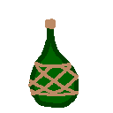
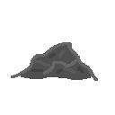
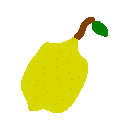
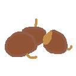

Eremoran Language
Eremoran (Eremoran: Eremorôm) is the language spoken in Eremor.
Proto-Eremo-Numoran
The following table is constructed for Proto-Eremo-Numoran:
| Labiovelar |
Alveolar |
Palatal |
Velar |
| *m |
*n |
|
| *b |
*t *d |
*tʃ |
*k *g |
| *ɸ *β |
*s |
*ʃ |
*x |
|
*l *r |
|
PEN had 15 consonants and 7 vowels.
There was likely no /p/ in Proto-Eremo-Numoran: it is totally absent in Numoran and many of the Eremoran words containing /p/ are known loans.
In numoran, two of these vowels are lost, and /ʃ/ merged with /tʃ/.
The following are known sound changes, arranged roughly from oldest to newest.
From Proto-Eremo-Numoran to Old Eremoran:
- /x[e/ɛ]/ > /a/
- /x/ > /k/
- /f s/ > /h/ word-initially
- inter-voiced /s/ > /z/ and /ss/ > /s/.
- /ɸ/ > /f/.
- /β/ > /b/.
- /i/ > /j/ between a consonant and a vowel.
- /sj zj tj dj/ > /ʃ ʒ tʃ dʒ/.
- /ʃ ʒ tʃ dʒ/ > /s z ts dz/.
- Unstressed vowels reduced to schwa.
From Old Eremoran to Eremoran (ie. these sound changes were recorded):
- /ts/ > /s/.
- /h/ > /Ø/.
- /r/ > /ʀ/.
Comparison between Proto-Eremo-Numoran, Eremoran, and Numoran:
| English |
Eremoran |
Numoran |
Proto-Eremo-Numoran |
| beer |
/ˈbɔr.nk̩t/ |
/ˈbweɾ.naxt/ |
/ˈβɔr.naxt/ |
| hammer |
/ˈbɔʕ.n̩t/ |
/ˈbwe.ʎent/ |
/ˈvɔ.lɛnt/ |
| health |
/ˈɛn.lom/ |
/ˈsjen.lon/ |
/ˈsɛn.lom/ |
| knowledge |
/f̩ˈfe.km̩/ |
/afˈfe.kwen/ |
/afˈfe.kɔm/ |
| person |
/mɔħ/ |
/mweɾ/ |
/mɔr/ |
| red |
/ʀ̩ˈʀɛ.ʊ/ |
/eˈɾjew/ |
/ɛˈrɛ.u/ |
| sight |
/s̩ˈu.ʀm̩/ |
/ˈsjaw.ɾɔn/ |
/si.aˈu.rɔm/ |
| that |
/ɔ/ |
/swe/ |
/sɔ/ |
Phonology
There are 13 consonants, and 7 vowels in Eremoran. Vowels change quality based on stress.
| Labiovelar |
Alveolar |
Velar |
Uvular |
| m |
n |
|
| p b |
t d |
k g |
|
| f |
s z |
|
|
l |
|
ʀ |
| Writing |
Stressed |
Unstressed |
| a |
ɑ |
ə |
| e |
ɛ |
ə |
| ê |
e |
e |
| i |
i |
ɪ |
| o |
ɔ |
ə |
| ô |
o |
o |
| u |
u |
ʊ |
 |
|
The primary pronounciation of the rhotic in contemporary Eremoran. |
The usage of /ħ/. |
The following remarks apply to all dialects:
- Stress is on the penult.
- /ə/ + non-schwa vowel = non-schwa vowel.
- /l/ is /ʕ/ intervocallically and word-finally.
- /n/ is /ŋ/ before velars.
The following remarks apply to the capital dialect, the focus of this writing, but not necessarily others:
- /ʀ/ is /ħ/ after /a ɔ/ except before front vowels.
- Voiced plosives /b d g/ have fricatives as intervocalic allophones /β ð ɣ/.
- /h/ is silent for most although there are some still pronouncing it /h ~ ʔ/, primarily in rural areas west of Deftei (Bend-Highbrook Dialect) and those in the upper lake.
The following remark applies to dialects north of Deftei:
- /t d s z/ are palatalized to /tʃ dʒ ʃ ʒ/ before front vowels.
The following remark applies to the Upper Eremoran dialect:
- /ɣ/ is instead /j/ and interacts with some immediately preceding vowels in the following manner: /a ɔ o ʊ u/ → /æ œ ø ʏ y/
The following remarks apply to the Bend-Highbrook dialect:
- The Bend-Highbrook dialect is the sole dialect to retain the archaic masculine-feminine distinction.
Other dialects use the old masculine as the human noun class.
The feminine was formed like the masculine -r, and was -rre.
By the time of the ending loss, the only audible difference was stress shift and the length of the rhotic, so it is unsurprising it fell into disuse.
Some modern scribes still observe the distinction in writing, but is widely viewed as an archaicism and the practice is quickly vaporizing.
- Some of the older residents remember a time when the eldest residents still used alveolar /r/, so the transition to uvular /ʁ/ there was relatively recent.
Transliteration Notes (for us humans)
In positions where the vowel is always unstressed, even in compounds, 'a' is used.
/h/ is silent for most speakers.
Samples
| EN |
ER |
| They say the cat went onto the table. |
Roraok ad abakt afkaz morôz. |
| Did the cat go onto the table? |
Roraok ad abakt afkaz ne. |
| Wouldn't it be interesting if the cat got onto the table? |
Roraok ad abakt afkaz nen. |
| Maybe the cat went onto the table. |
Roraok ad abakt afkaz kasraz. |
| The cat went onto the table. |
Roraok ad abakt afkaz. |
| The cat did not go onto the table. |
Roraok ad abakt afkaz uid. |
| The cat is on the table. |
Roraok abakt ad. |
| The cat is not on the table. |
Roraok abakt ad uid. |
Morphology
- Adjectives end in -u- + noun ending, except ho, id(a) and ko, which just has the ending.
- Verbs end in -z.
- -êr = en. -er, la. -ator
- -om = verb -> noun suffix
- -lk = adjective -> adverb suffix
- -(i)su = -like, or -ish, noun -> adj.
- u- is a non-productive negative prefix, eg. uid "not" from *u- "not" + id "one".
-
Five noun classes:
- Human - (-r)
- Animate - (-k)
- Neuter 1 (Things that are harvested/broken from their source, used as tools...) - (-t)
- Neuter 2 (Other tangibles, the 'default' class) - (-Ø)
- Intangible - (-m)
Note that there are occasional exceptions to this rule, especially in proper nouns.
- /l/ -> /Ø/ is a "cutesy" sound change.
- Eremoran has productive partial and full reduplication:
- adv. → adv.: (Partial; No longer productive) more specific meaning of an adverb, eg. nen
- adj. → adj.: (Full) disparaging form of certain adjectives, eg. hoso, idid, koko
- adj. → n.: (Partial) noun possessing a quality, eg. dadal, elelak, kikir
- n. → n.: (Partial) This transformation has two uses:
- Deriving artificial equivalents of natural features, eg. bebegt, lanlant, mimit, mumust, tutut
- Deriving meats from animals, eg. bôbôt, didirat
Grammar
- Verbs do not conjugate at all; TAM is formed with special auxillary verbs.
- SOV order is the default, but the presence of the preposition dir effectively allows any order.
- Adjectives (incl. demonstratives and numerals) and genitives precede nouns.
- Adpositions come immediately after the noun they modify.
- Except dir, and sometimes ad, which immediately precede the noun, regardless of any adjectives.
- Eremoran uses double-headed relative clauses.
- eg. Ad abakt roraok numz abakt balitz. = [onto] [table] [cat] [ran] [table] [broke] = The table the cat ran onto broke.
- The topic of the relative clause is always moved to the beginning.
- Adjective use:
- siu môr - "white person"
- simôr - "whiteperson"
- môsir - "whiteperson" (contrasted with the prior entry by an even stronger connection between the two.
Vocab
Important Sets
One through ten:
- id
- nasu
- kumku
- babzu
- hanu
- elmnu
- glimu
- triksu
- talsu
- nasanu
Colors:
- red - ereu
- orange - ereganu
- yellow - ganu
- green - tasu
- cyan - lingu
- blue - ulu
- purple - ereulu
- black - usiu
- white - siu
- grey - dalu
- brown - kaspsu
Full List
- abakt

- Etymology: Proto-Eremo-Numoran *abakt 'board'
- n., 3rd
-
- board, plank
- table
- tablet, map, document
- abask
- Etymology: Proto-Eremo-Numoran *aβasx 'duck'
- n., 2nd
-
- duck
- ad
- Etymology: Proto-Eremo-Numoran *xêd
- post./prep.
-
- (prepositionally) to, towards
- (prepositionally) for
- (postpositionally) at, by
- (postpositionally) during, while
- (postpositionally) have: X Y ad = Y has X
- (prepositionally) into, onto
- (prepositionally) until, up to
- addáukaz
- Etymology: ad + dáukaz
- v.
-
- happen
- afêkom
- Etymology: afêkz + -om
- n., 5th
-
- knowledge
- afêkz
- Etymology: Proto-Eremo-Numoran *aɸêks 'know'
- v.
-
- know
- afkaz
- Etymology: Proto-Eremo-Numoran *aɸkas 'go'
- v.
-
- go
- ala
- Etymology: Proto-Eremo-Numoran *ala 'oak'
- n., 4th
-
- oak
- alika

- Etymology: Proto-Eremo-Numoran *alika 'sand'
- n., 4th
-
- sand
- desert
- beach
- amzralz
- Etymology: Proto-Eremo-Numoran *amsrals 'count'
- v.
-
- count
- andôt
- Etymology: Proto-Eremo-Numoran *andôt 'oven'
- n., 3rd
-
- oven
- annumz
- Etymology: Proto-Eremo-Numoran *xênnums 'charge' from *xêd 'to' + *nums 'run'
- v.
-
- charge; rush; skirmish
- arama

- Etymology: Proto-Eremo-Numoran *xere 'fire' + *ma 'bearer, holder, container'. Compare Modern Eremoran ardo 'fire' and mat 'house'.
- n., 4th
-
- native copper
- tetrahedrite
- malachite
- aramat
- Etymology: arama + -t
- n., 3rd
-
- copper
- ardo
- Etymology: Proto-Eremo-Numoran *xéredo 'flame', diminutive of *xere 'fire', from *x 'living; flickering(?)' + *ereu 'red'
- n., 4th
-
- (wild)fire
- ardomut
- 
- Etymology: ardo 'fire' + mu 'water' + -t
- n., 3rd
-
- wine
- ardomukaskrut
- Etymology: ardomut 'wine' + kaskru 'apple'
- n., 3rd
-
- cider
- ardzin
- Etymology: Proto-Eremo-Numoran *xeredo 'flame' + *in '???'
- n., 4th
-
- native silver
- ardzint
- Etymology: ardzin + -t
- n., 3rd
-
- silver
- asmarz
- Etymology: Proto-Eremo-Numoran *ássamars 'relax'
- v.
-
- relax
- babzu
- Etymology: Proto-Eremo-Numoran *babsu 'four'
- adj.
-
- four
- balitz
- Etymology: Proto-Eremo-Numoran *balits 'die'
- v.
-
- die
- end
- bartonk

- Etymology: Proto-Eremo-Numoran *bartonx 'fox'
- n., 2nd
-
- fox
- barz
- Etymology: Proto-Eremo-Numoran *bars 'bind'
- v.
-
- bind
- unite
- batú
- Etymology: Proto-Eremo-Numoran *batú 'also'
- adv.
-
- also, too
- baz
- Etymology: Proto-Eremo-Numoran *βas 'lead'
- v.
-
- lead
- bazêr

- Etymology: baz + -êr
- n., 1st
-
- leader, ruler
- emperor, king
- be
- Etymology: Proto-Eremo-Numoran *βe 'or'
- conj.
-
- or, either
- bebegt
- Etymology: Reduplicated from beg 'way'
- n., 3rd
-
- road
- beg
- Etymology: Proto-Eremo-Numoran *βeg 'way'
- n., 4th
-
- way, path
- berbz
- Etymology: Proto-Eremo-Numoran *berbs 'leave'
- v.
-
- leave
- betlaêr
- Etymology: betlat + -êr.
- n., 1st
-
- swordsman
- betlat
- Etymology: Proto-Eremo-Numoran *betlext 'sword'.
- n., 3rd
-
- sword
- bim
- Etymology: Proto-Eremo-Numoran *βim 'battle'
- n., 5th
-
- battle
- bôbôt
- Etymology: Reduplicated from bôk 'chicken'
- n., 3rd
-
- chicken (meat)
- bôk
- Etymology: Proto-Eremo-Numoran *βôx 'chicken'
- n., 2nd
-
- (live) chicken
- bolent

- Etymology: Proto-Eremo-Numoran *βolent 'hammer'
- n., 3rd
-
- hammer
- bornakt
- Etymology: Proto-Eremo-Numoran *βornaxt 'beer'
- n., 3rd
-
- beer
- da
- Etymology: Proto-Eremo-Numoran *da 'earth'

- n., 4th
-
- earth, dirt, ground, soil
- clay
- land, territory
- Oneia
- dadal
- 
- Etymology: Proto-Eremo-Numoran *dadal 'ash', reduplicated from *dalu 'grey'
- n., 4th
-
- ash
- dadalire

- Etymology: Proto-Eremo-Numoran *dadalire 'potash', from *dadal 'ash' + *lire 'wood'
- n., 4th
-
- potash
- daktarm
- Etymology: Proto-Eremo-Numoran *daktarm 'time'
- n., 5th
-
- time
- dalu

- Etymology: Proto-Eremo-Numoran *dalu 'grey'
- adj.
-
- grey
- danôak

- Etymology: Proto-Eremo-Numoran *da 'earth' + *nôax '[Some kind of animal]'
- n., 2nd
-
- bug, insect
- dasu
- Etymology: Proto-Eremo-Numoran *daʃu 'fast'
- adj.
-
- fast
- dáukaz
- Etymology: Altered form of *adafkaz, from ad 'to' + afkaz 'go'
- v.
-
- come; arrive
- didirak
- Etymology: Reduplicated from dirak 'whale'
- n., 3rd
-
- whale meat
- din
- Etymology: Proto-Eremo-Numoran *din
- post.
-
- out of
- ~ give~get/take*: X Y ad Z din = Z gives X to Y
- Note: * - There are many possible arrangements of this phrase.
To emphasize the recipient, ad may even be replaced by dir.
The most neutral phrasing is shown.
- dindáukaz
- Etymology: din 'out of' + dáukaz 'come'
- v.
-
- become
- dinrôz
- Etymology: din 'out of' + rôz 'speak'
- v.
-
- announce; declare
- dir
- Etymology: Proto-Eremo-Numoran *dir
- prep.
-
- [Object Particle]
- dirabeg
- Etymology: dirak 'whale' + beg 'way'
- n., 4th
-
- sea, ocean
- dirak
- Etymology: Proto-Eremo-Numoran *dirax 'whale'
- n., 2nd
-
- whale
- dô
- Etymology: Proto-Eremo-Numoran *dô 'in'
- post.
-
- in, on
- dôafkaz
- Etymology: Proto-Eremo-Numoran *dôaɸkas 'charge' from *dô 'in' + *aɸkas 'go'
- v.
-
- enter
- begin
- dôkalz
- Etymology: Proto-Eremo-Numoran *dôkals 'ask', from *dô 'in' + *kals 'seek'
- v.
-
- ask
- dônumz
- Etymology: Proto-Eremo-Numoran *dônums 'attack' from *ad 'to' + *nums 'run'
- v.
-
- attack; invade
- dôsaurz
- Etymology: dô 'in' + saurz 'see'
- v.
-
- act maliciously towards
- envy
- dou
- Etymology: Proto-Eremo-Numoran *dou 'few'
- adj.
-
- few
- less
- edzam

- Etymology: Proto-Eremo-Numoran *ediam 'part'
- n., 5th
-
- part
- section, segment, chapter
- sector, district
- a unit of measurement equal to one-quarter of one labnim (~42.6 mm)
- êkar
- Etymology: Proto-Eremo-Numoran *êkar 'man'
- n., 1st
-
- man
- husband
- elau
- Etymology: Proto-Eremo-Numoran *elau 'little'
- adj.
-
- little, small, tiny
- elaêr
- Etymology: elau + -êr
- n., 1st
-
- child
- elalak
- Etymology: Reduplicated from elau 'small'
- n., 2nd
-
- young
- elmnu
- Etymology: Proto-Eremo-Numoran *elmnu 'six'
- adj.
-
- six
- empra
- 
- Etymology: Loan from Pre-Eremoran
- n., 4th
-
- lemon
- endou
- Etymology: Proto-Eremo-Numoran *endou 'high'
- adj.
-
- high, up
- tall, deep
- long
- wide
- ensfu
- Etymology: Proto-Eremo-Numoran *ensɸu 'lewd'
- adj.
-
- lewd
- epeêr
- Etymology: epet + -êr.
- n., 1st
-
- spearman
- epet
- Etymology: Pre-Eremoran Loan.
- n., 3rd
-
- spear
- ereu
- Etymology: Proto-Eremo-Numoran *ereu 'red'. Related to ardo 'fire'.
- adj.
-
- red
- ereganu
- Etymology: ereu 'red' + ganu 'yellow'
- adj.
-
- orange
- ereulu
- Etymology: ereu 'red' + ulu 'blue'
- adj.
-
- purple
- ganu
- Etymology: Proto-Eremo-Numoran *ganu 'yellow'
- adj.
-
- yellow
- giskana
- Etymology: Proto-Eremo-Numoran *giʃkana 'birch'
- n., 4th
-
- birch
- giêr
- Etymology: git + -êr.
- n., 1st
-
- axeman
- git
- Etymology: Proto-Eremo-Numoran *git 'axe'. Possibly related to got.
- n., 3rd
-
- axe
- glimu
- Etymology: Proto-Eremo-Numoran *glimu 'seven'
- adj.
-
- seven
- got
- Etymology: Proto-Eremo-Numoran *got 'shield'. Possibly related to git.
- n., 3rd
-
- shield
- gotik
- Etymology: Proto-Eremo-Numoran *gotix 'fish'
- n., 2nd
-
- fish
- hafa
- Etymology: Proto-Eremo-Numoran *ɸexɸex 'rain', reduplicated from *ɸex [onomatopoeia for falling rain]
- n., 4th
-
- rain
- hafaz
- Etymology: Verbalized from hafa
- v.
-
- rain
- haiu
- Etymology: Proto-Eremo-Numoran *saiu 'thick'
- adj.
-
- thick
- halku
- Etymology: Proto-Eremo-Numoran *ɸalku 'heavy'
- adj.
-
- heavy
- important, serious
- profound
- hans
- Etymology: Proto-Eremo-Numoran *ɸants 'all'
- adj.
-
- all
- hanu
- Etymology: Proto-Eremo-Numoran *ɸanu 'hand'
- n.,adj.
-
- hand
- five
- henlôm
- Etymology: Proto-Eremo-Numoran *senlôm 'health'
- n., 5th
-
- health
- truth
- henlôsu
- Etymology: henlôu 'health' + -su
- adj.
-
- healthy
- true, real
- hilbe
- Etymology: Proto-Eremo-Numoran *ɸilβe 'cloud'
- n., 4th
-
- cloud
- fog
- ho
- Etymology: Proto-Eremo-Numoran *so 'that'
- adj.
-
- that, those
- hod
- Etymology: ho + dô
- conj.
-
- if
- hona
- Etymology: Proto-Eremo-Numoran *ɸona 'indeed'
- adv.
-
- indeed
- yes
- hoz
- Etymology: Proto-Eremo-Numoran *ɸos 'how'
- adv.
-
- how
- hut
- Etymology: Proto-Eremo-Numoran *ɸut
- n., 3rd
-
- bow
- id
- Etymology: Proto-Eremo-Numoran *id 'one'
- adj.
-
- one
- some
- idu
- Etymology: id + -u
- adj.
-
- first
- idulk
- Etymology: id + -(u)lk
- adj., adv.
-
- any
- iktêr
- Etymology: Proto-Eremo-Numoran íkatêr, from *íkat- ??? + -êr
- n., 1st
-
- girl (older form of elaôr)
- iu
- Etymology: Proto-Eremo-Numoran *iu 'reverse'
- adj.
-
- reverse
- kaflam
- Etymology: Proto-Eremo-Numoran *kaɸlam 'victory'
- n., 5th
-
- victory
- kagrem
- Etymology: Proto-Eremo-Numoran *kagrem 'tone'
- n., 5th
-
- music
- tonality
- kalz
- Etymology: Proto-Eremo-Numoran *kals 'ask'
- v.
-
- seek
- miss; lack
- want
- karm
- Etymology: Proto-Eremo-Numoran *xarm 'war'
- n., 5th
-
- war
- kaskru
- Etymology: Proto-Eremo-Numoran *xaʃxru 'apple'
- n., 4th
-
- apple
- kaskru is one of a handful of nouns ending in -u.
- kasp
- 
- Etymology: Pre-Eremoran Loan
- n., 4th
-
- chestnut
- kaspsu
- Etymology: kasp + -su
- adj.
-
- brown
- kasraz
- Etymology: Proto-Eremo-Numoran *kaʃras 'maybe'
- v.
-
- maybe
- kek
- Etymology: Proto-Eremo-Numoran *kex 'god'
- n., 2nd
-
- god
- ker
- Etymology: kek + -r
- n., 1st
-
- powerful person; aristocrat; noble
- skilled person; expert; master
- kihom
- Etymology: kim + ho
- n., 5th
-
- there
- kikom
- Etymology: kim + ko
- n., 5th
-
- here
- kim
- Etymology: Proto-Eremo-Numoran *kim 'place'
- n., 5th
-
- place, location
- kinam
- Etymology: kim + nau
- n., 5th
-
- where
- kinê

- Etymology: Proto-Eremo-Numoran *kinê 'reed'
- n., 4th
-
- reed
- cane
- kink
- Etymology: Proto-Eremo-Numoran *kinx 'weasel'
- n., 2nd
-
- weasel
- kikir
- Etymology: Reduplicated from kiu 'friendly'
- n., 1st
-
- friend
- kiu
- Etymology: Proto-Eremo-Numoran *kiu 'friendly'
- adj.
-
- friendly
- ko
- Etymology: Proto-Eremo-Numoran *ko 'this'
- adj.
-
- this, these
- kôbensu
- Etymology: kôbénk + -su.
- adj.
-
- (literally) murine
- cute
- shy
- kôbénk
- Etymology: Pre-Eremoran loan
- n.
-
- mouse
- rat
- Any species of the suborder Myomorpha
- kopz

- Etymology: Pre-Eremoran loan
- v.
-
- love
- kotaz
- Etymology: Proto-Eremo-Numoran *kotas 'shoot'
- v.
-
- launch
- shoot
- Note: this verb forms many compounds. (TODO; Will add soon!)
- ksu
- Etymology: Proto-Eremo-Numoran *xaʃú 'lung'
- n., 4th
-
- lung
- ksu is one of a handful of nouns ending in -u.
- ku
- Etymology: Proto-Eremo-Numoran *ku 'and'
- post.
-
- and, both
- with
- kun
- Etymology: Proto-Eremo-Numoran *xun 'snow'
- n., 4th
-
- snow
- kuafkaz
- Etymology: Proto-Eremo-Numoran *kuaɸkas 'join' from *ku 'with' + *aɸkas 'go'
- v.
-
- join
- kubarz
- Etymology: Proto-Eremo-Numoran *kubars 'gather', from *ku 'with' + *bars 'bind'
- v.
-
- gather
- kuidam
- Etymology: Proto-Eremo-Numoran *kuidam 'end'
- n., 5th
-
- end
- kumku

- Etymology: Proto-Eremo-Numoran *kumku 'three'
- adj.
-
- three
- kunumz
- Etymology: Proto-Eremo-Numoran *kunums 'attack' from *ku 'with' + *nums 'run'
- v.
-
- flock
- coincide
- agree; concur
- labnit
- Etymology: Proto-Eremo-Numoran *labnit 'brick'
- n., 3rd
-
- brick
- lan
- Etymology: Proto-Eremo-Numoran *lan 'cover'
- n., 4th
-
- cover
- lanlant
- Etymology: Reduplicated from lan 'cover'
- n., 3rd
-
- undergarment
- len
- Etymology: Proto-Eremo-Numoran *len 'stone'
- n., 4th
-
- stone, rock
- lib

- Etymology: Proto-Eremo-Numoran *lib 'heart'
- n., 4th
-
- heart
- core
- center
- lingu
- Etymology: Proto-Eremo-Numoran *lingu 'cyan'
- adj.
-
- cyan
- lolz
- Etymology: Proto-Eremo-Numoran *lols 'laugh'
- v.
-
- laugh
- lusik
- Etymology: Proto-Eremo-Numoran *lussix 'wolf'
- n., 2nd
-
- wolf
- maêr
- Etymology: *ma + -êr
- n., 1st
-
- mother
- maiusu
- Etymology: Proto-Eremo-Numoran *masiusiu 'stunned', from *mas 'contain' + *siusiu 'stunned, dazed', reduplicated from *siu 'bright'.
- adj.
-
- silly
- mam
- Etymology: mat + -m
- n., 5th
-
- home
- markla
- Etymology: Proto-Eremo-Numoran *markla 'thing'
- n., 4th
-
- thing
- masturk
- Etymology: Proto-Eremo-Numoran *mas 'contain' + *tur '???' + *-x [Animate suffix]
- n., 2nd
-
- rabbit
- mat

- Etymology: Proto-Eremo-Numoran *ma 'bearer, holder, container' + *-t (suffix for tools)
- n., 3rd
-
- house
- housing; casing
- mim
- Etymology: Proto-Eremo-Numoran *mim 'idea'
- n., 5th
-
- idea
- thought
- mimit
- Etymology: Reduplicated from mim
- n., 3rd
-
- craft [object], work of art
- mo
- Etymology: Proto-Eremo-Numoran *mo
- post.
-
- behind (in space)
- before (in time)
- monar
- Etymology: mor + nau
- n., 1st
-
- who
- mor

- Etymology: Proto-Eremo-Numoran *mor 'person' from Proto-Muran *mur 'person'
- n., 1st
-
- guy, person
- people
- morbik
- Etymology: Proto-Eremo-Numoran *morβix 'ant'
- n., 2nd
-
- ant
- morôz
- Etymology: Contraction of mor rôz ~ "It was mentioned"
- v. (Evidential; secondhand knowledge)
-
- [Specifies the speaker heard of the event mentioned]
- mourilm
- Etymology: mo 'before' + urilm 'shadow'
- n., 5th
-
- antumbra
- mu

- Etymology: Proto-Eremo-Numoran *mu 'water'
- n., 4th
-
- water
- body of water
- liquid, juice, fluid
- mu is one of a handful of nouns ending in -u.
- mudadalt
- Etymology: mu 'water' + dadal 'ash' + -t
- n., 3rd
-
- lye
- mulen
- Etymology: mu 'water' + len 'stone'
- n., 4th
-
- ice
- hail
- mumast
- Etymology: Proto-Eremo-Numoran *mumast 'ship', from *mu 'water' + *mas 'container' + *-t
- n., 3rd
-
- ship, boat
- mumust
- Etymology: Reduplicated from mus 'flotsam'
- n., 3rd
-
- raft
- mut
- Etymology: mu + -t
- n., 3rd
-
- extract, essential oil, stock
- mus
- Etymology: Nominalization of musu 'wet'
- n., 4th
-
- flotsam
- musu
- Etymology: mu + -su
- adj.
-
- wet
- namz
- Etymology: Proto-Eremo-Numoran *nams 'eat'
- v.
-
- eat
- nasanu
- Etymology: nasu + hanu
- adj.
-
- ten
- nasisu
- Etymology: nasu + -isu
- adj.
-
- second
- other
- nask
- Etymology: Proto-Eremo-Numoran *nassax 'carnivoran'
- n., 2nd
-
- carnivoran
- Note: this word does not refer to carnivores in general, only carnivorans.
- nasu
- Etymology: Proto-Eremo-Numoran *natiu 'two'
- adj.
-
- two
- nau
- Etymology: Proto-Eremo-Numoran *nau 'which, what'
- adj.
-
- which, what
- ne
- Etymology: Proto-Eremo-Numoran *ne
- part.
-
- [question particle]
- nen
- Etymology: Reduplicated from ne [question particle]
- part.
-
- "Wouldn't it be interesting if..."
- nikiniki
- Etymology: Proto-Eremo-Numoran *nikiniki 'liver', reduplicated from *niki '???'
- n., 4th
-
- liver
- nindat
- Etymology: Proto-Eremo-Numoran *nindat 'bread'
- n., 3rd
-
- bread
- nod
- Etymology: Proto-Eremo-Numoran *nod 'moon'
- n., 4th
-
- Nikki (Moon of Oneia)
- moon
- nu
- Etymology: Proto-Eremo-Numoran *nu 'low'
- adj.
-
- low
- short
- nubu
- Etymology: Proto-Eremo-Numoran *nubu 'new'
- adj.
-
- new
- nubêr
- Etymology: Proto-Eremo-Numoran *nubêr 'infant'
- n., 3rd
-
- infant
- newlywed
- numz
- Etymology: Proto-Eremo-Numoran *nums 'run'
- v.
-
- run
- óidak
- Etymology: Proto-Eremo-Numoran *óidak 'bird'
- n., 2nd
-
- bird
- óidkaz
- Etymology: Blend of óidak and afkaz
- v.
-
- fly
- okar
- Etymology: Proto-Eremo-Numoran *okar 'woman'
- n., 1st
-
- woman
- wife
- ôkarinu
- Etymology: Pre-Eremoran loan
- adj.
-
- crazy
- ômôrz
- Etymology: Contraction of ou mor saurz ~ "People saw"
- v. (Evidential; visual knowledge)
-
- [Specifies the speaker, and others, saw the event mentioned]
- cf. umôrz which implies the speaker was the sole witness
- ou
- Etymology: Proto-Eremo-Numoran *ou 'esteemed, right honorable'
- adj.
-
- [polite affix]
- [affix used to form first/second person personal pronouns, eg. môô]
- pankuz
- Etymology: Pre-Eremoran loan
- v.
-
- be happy
- enjoy
- parz
- Etymology: Pre-Eremoran loan
- v.
-
- chop, cut, slice
- indent
- whet
- parzom
- Etymology: parz + -om
- n., 5th
-
- chop, cut, slice
- indentation, notch
- purru
- Etymology: Pre-Eremoran loan
- adj.
-
- costly, expensive, valuable
- dear, important
- raz
- Etymology: Proto-Eremo-Numoran *ras 'paint'
- v.
-
- paint
- ril
- Etymology: Proto-Eremo-Numoran *ril 'sun'
- n., 4th
-
- Namei
- sunlight
- rilm
- Etymology: ril + -m
- n., 5th
-
- day, sol (unit of time)
- daytime
- rilu
- Etymology: ril + -u
- adj.
-
- bright
- rô
- Etymology: Proto-Eremo-Numoran *rô 'tongue'
- n., 4th
-
- tongue
- rôm
- Etymology: rô + -m
- n., 5th
-
- speech
- language
- roraok
- Etymology: Proto-Eremo-Numoran *raoraox 'cat', reduplicated from *rao 'meow'
- n., 2nd
-
- cat
- roradok
- Etymology: Proto-Eremo-Numoran *raoraodox 'kitten', diminutive of *raoraox 'cat'
- n., 2nd
-
- kitten
- rôz
- Etymology: rôm + -z
- v.
-
- speak; talk
- say
- saurom
- Etymology: saurz + -om
- n., 5th
-
- sight, vision
- sauroma

- Etymology: saurom + -a
- n., 4th
-
- eye
- saurz
- Etymology: Proto-Eremo-Numoran *sim 'brightness' + *aurz 'sense???'
- v.
-
- see
- administrate
- sazam
- Etymology: Appears to be Proto-Eremo-Numoran *siu 'bright' + *asa '???' + *-m (Intangible suffix)
- n., 5th
-
- awe, fear, shock
- se
- Etymology: Proto-Eremo-Numoran *sie 'grain'
- n., 4th
-
- grain
- a unit of measurement equal to one-fifteenth of one edzam (~2.84 mm)
- sedu
- Etymology: Proto-Eremo-Numoran *sedu 'heterosexual'
- adj.
-
- heterosexual, straight
- sesu
- Etymology: Proto-Eremo-Numoran *sietiu 'hundred'
- adj.
-
- hundred
- sets
- Etymology: Proto-Eremo-Numoran *sets '~planet'
- n., 4th
-
- substellar object orbiting a star
- (by extension) planet
- (by extension) minor planet
- (by extension) comet
- sihiz
- Etymology: Proto-Eremo-Numoran *siis [causative]
- v.
-
- [causative]
- sim
- Etymology: siu + -m
- n., 5th
-
- brightness
- white
- sipam
- Etymology: Pre-Eremoran Loan
- n., 5th
-
- relationship
- siu
- Etymology: siz + -u
- adj.
-
- shining
- white
- siz
- Etymology: Proto-Eremo-Numoran *sis 'shine'
- v.
-
- shine
- skuiku
- Etymology: Proto-Eremo-Numoran *skuixu 'young', from *skuix 'offspring' + *-u [Adjectival suffix].
- adj.
-
- young
- skum
- Etymology: Proto-Eremo-Numoran *ʃxum
- n., 5th
-
- winter
- spart
- Etymology: Pre-Eremoran loan
- n., 3rd
-
- base, foundation
- sparu
- Etymology: spart + -u
- adj.
-
- basic
- spez
- Etymology: Pre-Eremoran loan
- v.
-
- change
- edit; redact
- stanu
- Etymology: Proto-Eremo-Numoran *stanu 'tin'
- n., 4th
-
- tin ore
- stanu is one of a handful of nouns ending in -u.
- stanut
- Etymology: stanu + -t
- n., 3rd
-
- tin
- a coin made of tin
- su
- Etymology: Proto-Eremo-Numoran *tʃu 'of; from'.
- post.
-
- of; belonging to or made of
- sudôz
- Etymology: Proto-Eremo-Numoran *tʃudôs 'do; make' from *tʃu 'of; from' + *dôs 'do; make'.
- v.
-
- do
- make
- subir
- Etymology: Proto-Eremo-Numoran *tʃuβir 'warrior', from *tʃu 'of' + *βim 'battle'
- n., 1st
-
- warrior, soldier
- talire

- Etymology: Proto-Eremo-Numoran *talire 'tree', from older *taslire, from *tassu 'green' + *lire 'wood'. Related to taze, tasu, tasusku.
- n., 4th
-
- tree
- wood
- talsu
- Etymology: Proto-Eremo-Numoran *tálossu 'nine'
- adj.
-
- nine
- tasku
- Etymology: tasu 'green' + skum 'winter'. Related to talire, taze, and tasu.
- n., 4th
-
- pine
- tasusku is one of a handful of nouns ending in -u.
- tasu
- Etymology: Proto-Eremo-Numoran *tassu 'green', from *tase 'grass' + *-su '-ish'. Related to talire, taze, and tasusku.
- adj.
-
- green
- taze
- Etymology: Proto-Eremo-Numoran *tase 'grass'. Related to talire, tasu, and tasusku.
- n., 4th
-
- grass
- temz
- Etymology: Proto-Eremo-Numoran *tems 'defend'
- v.
-
- defend, protect
- temêr
- Etymology: temz + -êr
- n., 1st
-
- protector
- father
- tikt
- Etymology: Proto-Eremo-Numoran *tixt 'arrow'
- n., 3rd
-
- arrow
- tiu
- Etymology: Pre-Eremoran
- adj.
-
- far, distant
- remote
- tobê
- Etymology: Proto-Eremo-Numoran *toβê 'stick'
- n., 4th
-
- stick
- staff
- tôiu
- Etymology: Proto-Eremo-Numoran *tôiu 'such'
- adj.
-
- such
- tôn
- Etymology: Proto-Eremo-Numoran *tôn 'almost'
- adv.
-
- almost
- tônurilm
- Etymology: tôn 'almost' + urilm 'shadow'
- n., 5th
-
- penumbra
- triksu
- Etymology: Proto-Eremo-Numoran *tríkassu 'eight'
- adj.
-
- eight
- tukil
- Etymology: Proto-Eremo-Numoran *tuxil 'wind'
- n., 4th
-
- wind
- breath
- tukilk
- Etymology: tukil + -k
- n., 2nd
-
- soul
- ghost; spirit
- tukilm
- Etymology: tukil + -m
- n., 5th
-
- mood; spirit
- tum

- Etymology: Proto-Eremo-Numoran *tum 'sky'
- n., 5th
-
- sky
- set of objects visible overhead from a reference point
- tutum
- Etymology: tutut + -m
- n., 5th
-
- upper bound
- tutut
- Etymology: Reduplicated from tum
- n., 3rd
-
- ceiling
- ube
- Etymology: u- + be
- adv.
-
- nor, neither
- udasu
- Etymology: u- + dasu
- adj.
-
- slow
- udou
- Etymology: u- + dou
- adv.
-
- big, great, large
- many, much
- more
- uid
- Etymology: u- + id
- adv.
-
- not
- uidulk
- Etymology: u- + idulk
- adj., adv.
-
- no, none
- uhod
- Etymology: u- + hod
- conj.
-
- unless
- uku
- Etymology: u- + ku
- post.
-
- without
- ukuzestiu
- Etymology: uku- + zestiu
- adj.
-
- straight
- flat
- umonar
- Etymology: u- + monar
- pron.
-
- nobody
- umôrz
- Etymology: Contraction of uou mor saurz ~ "I saw"
- v. (Evidential; visual knowledge)
-
- [Specifies the speaker, and others, saw the event mentioned]
- cf. ômôrz which implies others witnessed the event too
- una
- Etymology: u- + nau
- pron.
-
- nothing
- undou
- Etymology: u- + endou
- adj.
-
- low
- shallow
- short
- thin
- ulu
- Etymology: Proto-Eremo-Numoran *ulu 'blue'
- adj.
-
- blue
- upiám
- Etymology: Pre-Eremoran Loan
- n., 5th
-
- symbol, character, glyph
- logo, emblem
- cover art
- upiát
- Etymology: upiám + -t
- n., 3rd
-
- flag
- ur
- Etymology: Proto-Eremo-Numoran *ur 'so'
- adv.
-
- so
- urist

- Etymology: Proto-Eremo-Numoran *úrissat 'dagger'
- n., 3rd
-
- dagger
- usedu
- Etymology: u- + sedu
- adj.
-
- gay
- usiu
- Etymology: u- + siu
- adj.
-
- black
- dim
- urilm
- Etymology: u- + rilm
- n., 5th
-
- darkness
- shadow, shade, umbra
- night
- uzurgu
- Etymology: u- + zurgu
- adj.
-
- good
- zestim
- Etymology: Proto-Eremo-Numoran *sésetim 'angle', reduplicated from *seti 'joint'
- n., 5th
-
- angle
- bend
- zeti
- Etymology: Proto-Eremo-Numoran *seti 'joint'
- n., 4th
-
- joint
- zestiu
- Etymology: zestim + -u
- adj.
-
- angled
- bent
- zurgu
- Etymology: Proto-Eremo-Numoran *surgu 'bad'
- adj.
-
- bad
- evil
Names
- Adramor
- Etymology: Metathesis and weakening of Ardomor
- (A)
- Ardomor
- Etymology: ardo 'fire' + mor 'person'
- (A)
- Arrôr
- Etymology: Proto-Eremo-Numoran Xêrrôr, nominalization of *xêrrôs from *xêd 'to' + *rôs 'speak'; Related to Numoran Xerror
- (M)
- Éasur
- Etymology: Pre-Eremoran Loan
- (F)
- Ebbazêr
- Etymology: Syncopated and assimilated form of *Epebazêr, from epet 'spear' + bazêr 'ruler', equivalent to English Genseric
- (M)
- Esur
- Etymology: Syncopated form of Éasur
- (F)
- Epemor
- Etymology: epet 'spear' + mor 'person'
- (M)
- Gutoker
- Etymology: Pre-Eremoran Loan; related to Ker
- (F)
- Hafaela
- Etymology: hafa 'rain' + ela [diminutive]
- (F)
- Haffela
- Etymology: Assimilated form of Hafaela
- (F)
- Ker
- Etymology: ker 'master'
- (M)
- Iúr
- Etymology: Unknown
- (A)
- Lôtor
- Etymology: Proto-Eremo-Numoran *ɸlôtor; Related to Numoran Flotwer and Lotwer
- (M)
- Lusikopêr
- Etymology: lusik 'dog; wolf' + kopz 'love' + -êr '-er', cf. Greek Philippos
- (M)
- Mankar
- Etymology: Syncopated form of Mánikar
- (F)
- Mánikar
- Etymology: Pre-Eremoran Loan
- (F)
- Napaker
- Etymology: Pre-Eremoran Loan; related to Ker
- (F)
- Netar
- Etymology: Pre-Eremoran Loan
- (F)
- Pamor
- Etymology: Unknown component *pa + mor 'person'
- (F)
- Parôkar
- Etymology: parz 'whet' + ou (polite affix) + okar 'woman'
- (F)
- Parônar
- Etymology: Dissimilated form of Parôkar
- (M)
- Saiur
- Etymology: Pre-Eremoran Loan
- (F)
- Sioker
- Etymology: Pre-Eremoran Loan; related to Ker
- (F)
- Temêr
- Etymology: temêr 'protector; defender'
- (M)